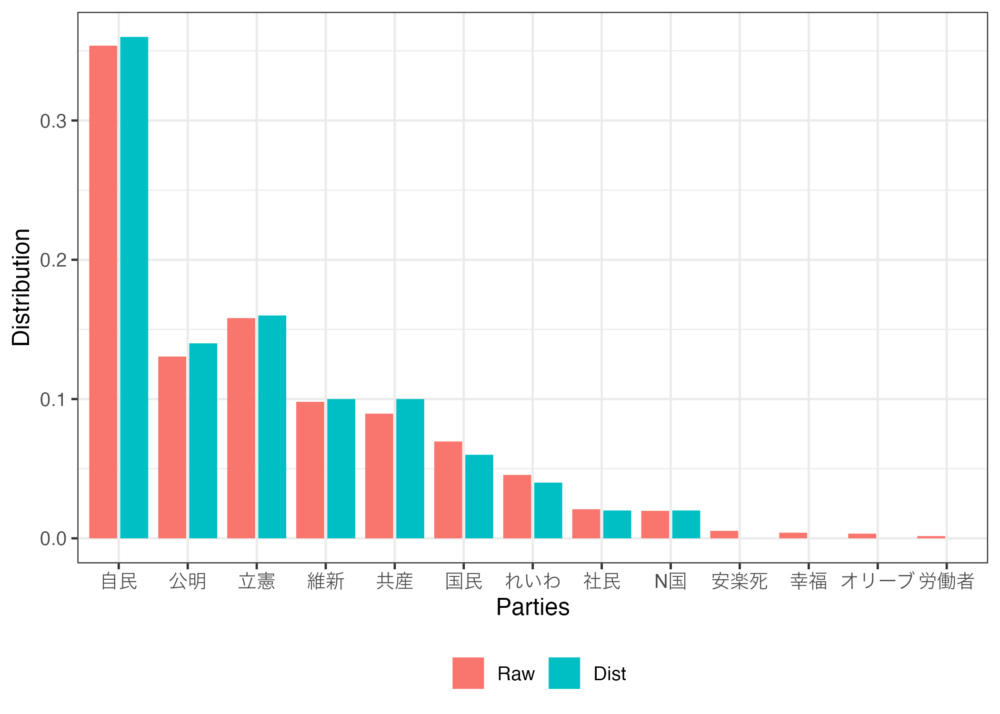
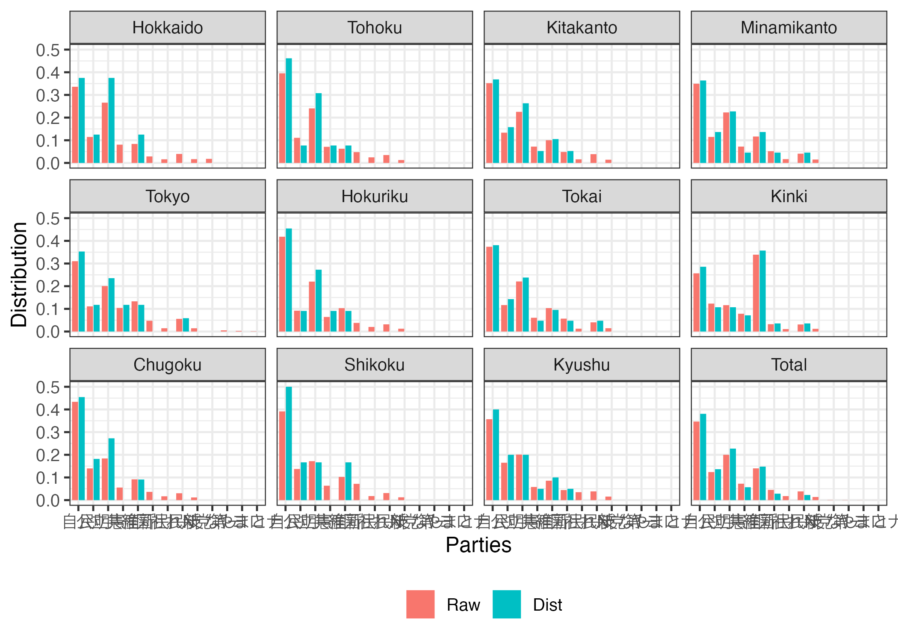
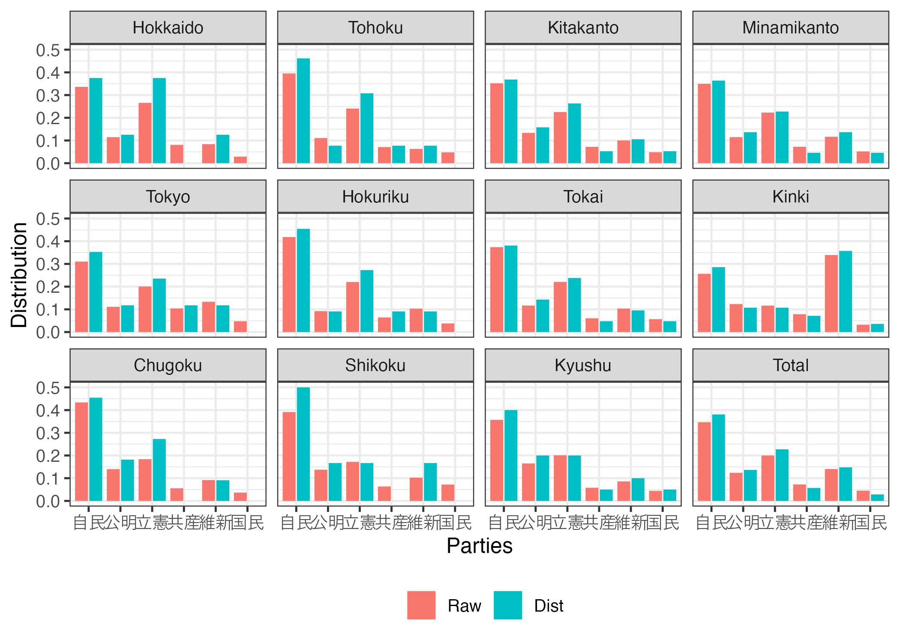
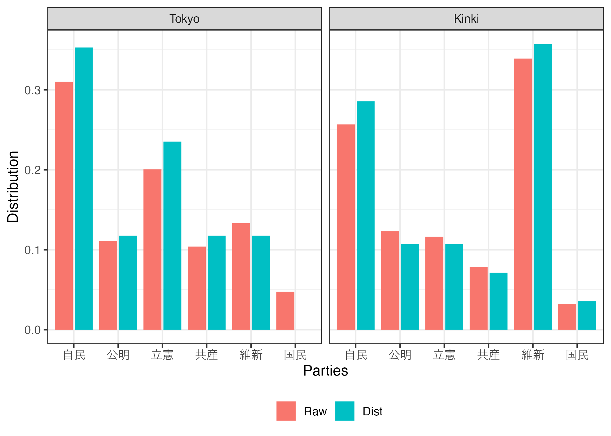
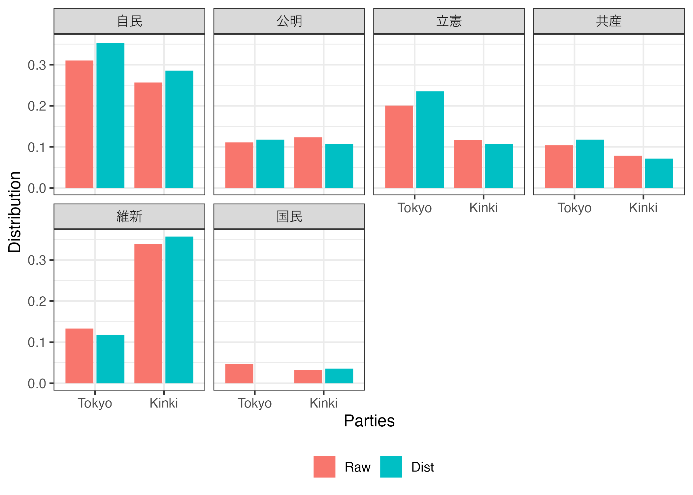
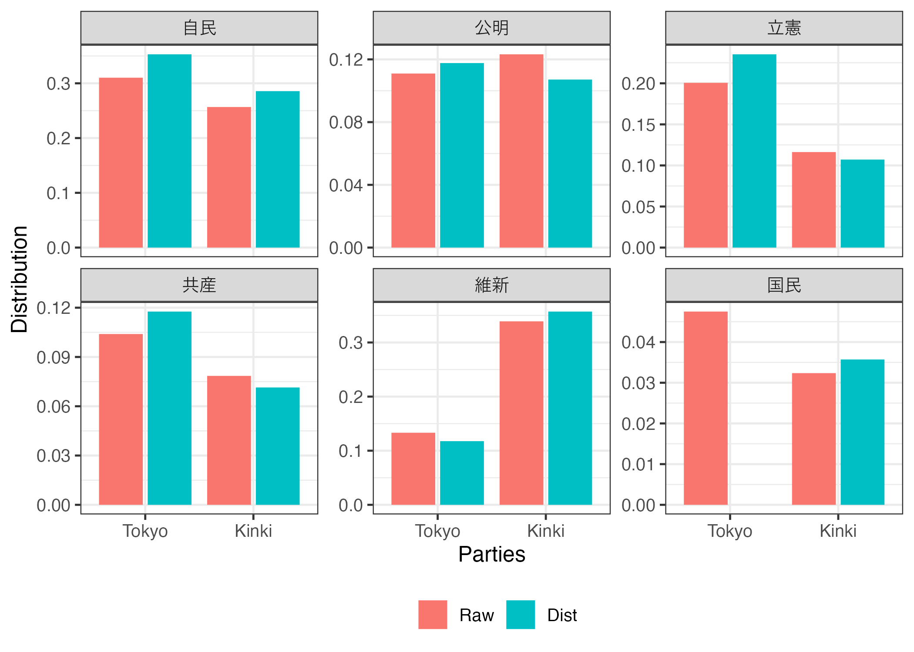

library(PRcalc)
Attaching package: 'PRcalc'The following object is masked from 'package:stats':
decomposelibrary(PRcalc)
Attaching package: 'PRcalc'The following object is masked from 'package:stats':
decompose# Japanese upper house election in 2019
data("jp_upper_2019")
jp_upper_2019 Party Vote
1 自民 17712373
2 公明 6536336
3 立憲 7917721
4 維新 4907844
5 共産 4483411
6 国民 3481078
7 れいわ 2280253
8 社民 1046012
9 N国 987885
10 安楽死 269052
11 幸福 202278
12 オリーブ 167897
13 労働者 80055# Japanese lower house election in 2019
data("jp_lower_2021")
jp_lower_2021 Party Hokkaido Tohoku Kitakanto Minamikanto Tokyo Hokuriku Tokai
1 自民 863300 1628233 2172065 2590787 2000084 1468380 2515841
2 公明 294371 456287 823930 850667 715450 322535 784976
3 立憲 682913 991505 1391149 1651562 1293281 773076 1485947
4 共産 207189 292830 444115 534493 670340 225551 408606
5 維新 215344 258690 617531 863897 858577 361476 694630
6 国民 73621 195754 298056 384482 306180 133600 382734
7 社民 41248 101442 97963 124447 92995 71185 84220
8 れ新 102086 143265 239592 302675 360387 111281 273208
9 N党 42916 52664 87702 111298 92353 43529 98238
10 支なし 46142 0 0 0 0 0 0
11 第一 0 0 0 0 33661 0 0
12 やまと 0 0 0 0 16970 0 0
13 コロナ 0 0 0 0 6620 0 0
Kinki Chugoku Shikoku Kyushu
1 2407699 1352723 664805 2250966
2 1155683 436220 233407 1040756
3 1090666 573324 291871 1266801
4 736156 173117 108021 365658
5 3180219 286302 173826 540338
6 303480 113899 122082 279509
7 100980 52638 30249 221221
8 292483 94446 52941 243284
9 111539 36758 21285 98506
10 0 0 0 0
11 0 0 0 0
12 0 0 0 0
13 0 0 0 0obj1 <- prcalc(jp_upper_2019, m = 50, method = "dt")
obj1Raw:
Party Vote
1 自民 17712373
2 公明 6536336
3 立憲 7917721
4 維新 4907844
5 共産 4483411
6 国民 3481078
7 れいわ 2280253
8 社民 1046012
9 N国 987885
10 安楽死 269052
11 幸福 202278
12 オリーブ 167897
13 労働者 80055
Result:
Party Vote
1 自民 18
2 公明 7
3 立憲 8
4 維新 5
5 共産 5
6 国民 3
7 れいわ 2
8 社民 1
9 N国 1
10 安楽死 0
11 幸福 0
12 オリーブ 0
13 労働者 0
Parameters:
Allocation method: D'Hondt (Jefferson) method
Extra parameter:
Threshold: 0
Magnitude: 50obj2 <- prcalc(jp_lower_2021,
m = c(8, 13, 19, 22, 17, 11, 21, 28, 11, 6, 20),
method = "dt")
obj2Raw:
Party Hokkaido Tohoku Kitakanto Minamikanto Tokyo Hokuriku Tokai
1 自民 863300 1628233 2172065 2590787 2000084 1468380 2515841
2 公明 294371 456287 823930 850667 715450 322535 784976
3 立憲 682913 991505 1391149 1651562 1293281 773076 1485947
4 共産 207189 292830 444115 534493 670340 225551 408606
5 維新 215344 258690 617531 863897 858577 361476 694630
6 国民 73621 195754 298056 384482 306180 133600 382734
7 社民 41248 101442 97963 124447 92995 71185 84220
8 れ新 102086 143265 239592 302675 360387 111281 273208
9 N党 42916 52664 87702 111298 92353 43529 98238
10 支なし 46142 0 0 0 0 0 0
11 第一 0 0 0 0 33661 0 0
12 やまと 0 0 0 0 16970 0 0
13 コロナ 0 0 0 0 6620 0 0
Kinki Chugoku Shikoku Kyushu Total
1 2407699 1352723 664805 2250966 19914883
2 1155683 436220 233407 1040756 7114282
3 1090666 573324 291871 1266801 11492095
4 736156 173117 108021 365658 4166076
5 3180219 286302 173826 540338 8050830
6 303480 113899 122082 279509 2593397
7 100980 52638 30249 221221 1018588
8 292483 94446 52941 243284 2215648
9 111539 36758 21285 98506 796788
10 0 0 0 0 46142
11 0 0 0 0 33661
12 0 0 0 0 16970
13 0 0 0 0 6620
Result:
Party Hokkaido Tohoku Kitakanto Minamikanto Tokyo Hokuriku Tokai Kinki
1 自民 3 6 7 8 6 5 8 8
2 公明 1 1 3 3 2 1 3 3
3 立憲 3 4 5 5 4 3 5 3
4 共産 0 1 1 1 2 1 1 2
5 維新 1 1 2 3 2 1 2 10
6 国民 0 0 1 1 0 0 1 1
7 社民 0 0 0 0 0 0 0 0
8 れ新 0 0 0 1 1 0 1 1
9 N党 0 0 0 0 0 0 0 0
10 支なし 0 0 0 0 0 0 0 0
11 第一 0 0 0 0 0 0 0 0
12 やまと 0 0 0 0 0 0 0 0
13 コロナ 0 0 0 0 0 0 0 0
Chugoku Shikoku Kyushu Total
1 5 3 8 67
2 2 1 4 24
3 3 1 4 40
4 0 0 1 10
5 1 1 2 26
6 0 0 1 5
7 0 0 0 0
8 0 0 0 4
9 0 0 0 0
10 0 0 0 0
11 0 0 0 0
12 0 0 0 0
13 0 0 0 0
Parameters:
Allocation method: D'Hondt (Jefferson) method
Extra parameter:
Threshold: 0
Magnitude:
Hokkaido Tohoku Kitakanto Minamikanto Tokyo Hokuriku
8 13 19 22 17 11
Tokai Kinki Chugoku Shikoku Kyushu
21 28 11 6 20 obj3 <- prcalc(jp_lower_2021,
m = c(8, 13, 19, 22, 17, 11, 21, 28, 11, 6, 20),
method = "hare")
print(obj3, show_total = FALSE) # Hide `Total` columnRaw:
Party Hokkaido Tohoku Kitakanto Minamikanto Tokyo Hokuriku Tokai
1 自民 863300 1628233 2172065 2590787 2000084 1468380 2515841
2 公明 294371 456287 823930 850667 715450 322535 784976
3 立憲 682913 991505 1391149 1651562 1293281 773076 1485947
4 共産 207189 292830 444115 534493 670340 225551 408606
5 維新 215344 258690 617531 863897 858577 361476 694630
6 国民 73621 195754 298056 384482 306180 133600 382734
7 社民 41248 101442 97963 124447 92995 71185 84220
8 れ新 102086 143265 239592 302675 360387 111281 273208
9 N党 42916 52664 87702 111298 92353 43529 98238
10 支なし 46142 0 0 0 0 0 0
11 第一 0 0 0 0 33661 0 0
12 やまと 0 0 0 0 16970 0 0
13 コロナ 0 0 0 0 6620 0 0
Kinki Chugoku Shikoku Kyushu
1 2407699 1352723 664805 2250966
2 1155683 436220 233407 1040756
3 1090666 573324 291871 1266801
4 736156 173117 108021 365658
5 3180219 286302 173826 540338
6 303480 113899 122082 279509
7 100980 52638 30249 221221
8 292483 94446 52941 243284
9 111539 36758 21285 98506
10 0 0 0 0
11 0 0 0 0
12 0 0 0 0
13 0 0 0 0
Result:
Party Hokkaido Tohoku Kitakanto Minamikanto Tokyo Hokuriku Tokai Kinki
1 自民 3 5 7 8 5 5 8 7
2 公明 1 1 3 2 2 1 3 4
3 立憲 2 3 4 5 4 3 5 3
4 共産 1 1 1 2 2 1 1 2
5 維新 1 1 2 3 2 1 2 10
6 国民 0 1 1 1 1 0 1 1
7 社民 0 0 0 0 0 0 0 0
8 れ新 0 1 1 1 1 0 1 1
9 N党 0 0 0 0 0 0 0 0
10 支なし 0 0 0 0 0 0 0 0
11 第一 0 0 0 0 0 0 0 0
12 やまと 0 0 0 0 0 0 0 0
13 コロナ 0 0 0 0 0 0 0 0
Chugoku Shikoku Kyushu
1 5 2 7
2 2 1 3
3 2 1 4
4 1 0 1
5 1 1 2
6 0 1 1
7 0 0 1
8 0 0 1
9 0 0 0
10 0 0 0
11 0 0 0
12 0 0 0
13 0 0 0
Parameters:
Allocation method: Hare-Niemeyer quota
Extra parameter:
Threshold: 0
Magnitude:
Hokkaido Tohoku Kitakanto Minamikanto Tokyo Hokuriku
8 13 19 22 17 11
Tokai Kinki Chugoku Shikoku Kyushu
21 28 11 6 20 print(obj3, prop = TRUE) # Show proportionRaw:
Party Hokkaido Tohoku Kitakanto Minamikanto Tokyo Hokuriku Tokai Kinki
1 自民 0.3360 0.3951 0.3519 0.3494 0.31024 0.4183 0.3739 0.2567
2 公明 0.1146 0.1107 0.1335 0.1147 0.11098 0.0919 0.1167 0.1232
3 立憲 0.2658 0.2406 0.2254 0.2228 0.20061 0.2202 0.2208 0.1163
4 共産 0.0806 0.0711 0.0720 0.0721 0.10398 0.0642 0.0607 0.0785
5 維新 0.0838 0.0628 0.1001 0.1165 0.13318 0.1030 0.1032 0.3391
6 国民 0.0287 0.0475 0.0483 0.0519 0.04749 0.0381 0.0569 0.0324
7 社民 0.0161 0.0246 0.0159 0.0168 0.01442 0.0203 0.0125 0.0108
8 れ新 0.0397 0.0348 0.0388 0.0408 0.05590 0.0317 0.0406 0.0312
9 N党 0.0167 0.0128 0.0142 0.0150 0.01433 0.0124 0.0146 0.0119
10 支なし 0.0180 0.0000 0.0000 0.0000 0.00000 0.0000 0.0000 0.0000
11 第一 0.0000 0.0000 0.0000 0.0000 0.00522 0.0000 0.0000 0.0000
12 やまと 0.0000 0.0000 0.0000 0.0000 0.00263 0.0000 0.0000 0.0000
13 コロナ 0.0000 0.0000 0.0000 0.0000 0.00103 0.0000 0.0000 0.0000
Chugoku Shikoku Kyushu Total
1 0.4336 0.3914 0.3569 0.346551
2 0.1398 0.1374 0.1650 0.123800
3 0.1838 0.1718 0.2009 0.199981
4 0.0555 0.0636 0.0580 0.072496
5 0.0918 0.1023 0.0857 0.140097
6 0.0365 0.0719 0.0443 0.045129
7 0.0169 0.0178 0.0351 0.017725
8 0.0303 0.0312 0.0386 0.038556
9 0.0118 0.0125 0.0156 0.013865
10 0.0000 0.0000 0.0000 0.000803
11 0.0000 0.0000 0.0000 0.000586
12 0.0000 0.0000 0.0000 0.000295
13 0.0000 0.0000 0.0000 0.000115
Result:
Party Hokkaido Tohoku Kitakanto Minamikanto Tokyo Hokuriku Tokai Kinki
1 自民 0.375 0.3846 0.3684 0.3636 0.2941 0.4545 0.3810 0.2500
2 公明 0.125 0.0769 0.1579 0.0909 0.1176 0.0909 0.1429 0.1429
3 立憲 0.250 0.2308 0.2105 0.2273 0.2353 0.2727 0.2381 0.1071
4 共産 0.125 0.0769 0.0526 0.0909 0.1176 0.0909 0.0476 0.0714
5 維新 0.125 0.0769 0.1053 0.1364 0.1176 0.0909 0.0952 0.3571
6 国民 0.000 0.0769 0.0526 0.0455 0.0588 0.0000 0.0476 0.0357
7 社民 0.000 0.0000 0.0000 0.0000 0.0000 0.0000 0.0000 0.0000
8 れ新 0.000 0.0769 0.0526 0.0455 0.0588 0.0000 0.0476 0.0357
9 N党 0.000 0.0000 0.0000 0.0000 0.0000 0.0000 0.0000 0.0000
10 支なし 0.000 0.0000 0.0000 0.0000 0.0000 0.0000 0.0000 0.0000
11 第一 0.000 0.0000 0.0000 0.0000 0.0000 0.0000 0.0000 0.0000
12 やまと 0.000 0.0000 0.0000 0.0000 0.0000 0.0000 0.0000 0.0000
13 コロナ 0.000 0.0000 0.0000 0.0000 0.0000 0.0000 0.0000 0.0000
Chugoku Shikoku Kyushu Total
1 0.4545 0.333 0.35 0.35227
2 0.1818 0.167 0.15 0.13068
3 0.1818 0.167 0.20 0.20455
4 0.0909 0.000 0.05 0.07386
5 0.0909 0.167 0.10 0.14773
6 0.0000 0.167 0.05 0.04545
7 0.0000 0.000 0.05 0.00568
8 0.0000 0.000 0.05 0.03977
9 0.0000 0.000 0.00 0.00000
10 0.0000 0.000 0.00 0.00000
11 0.0000 0.000 0.00 0.00000
12 0.0000 0.000 0.00 0.00000
13 0.0000 0.000 0.00 0.00000
Parameters:
Allocation method: Hare-Niemeyer quota
Extra parameter:
Threshold: 0
Magnitude:
Hokkaido Tohoku Kitakanto Minamikanto Tokyo Hokuriku
8 13 19 22 17 11
Tokai Kinki Chugoku Shikoku Kyushu
21 28 11 6 20 print(obj3, use_gt = TRUE) # use {gt} package| Party | Hokkaido | Tohoku | Kitakanto | Minamikanto | Tokyo | Hokuriku | Tokai | Kinki | Chugoku | Shikoku | Kyushu | Total |
|---|---|---|---|---|---|---|---|---|---|---|---|---|
| Raw | ||||||||||||
| 自民 | 863300 | 1628233 | 2172065 | 2590787 | 2000084 | 1468380 | 2515841 | 2407699 | 1352723 | 664805 | 2250966 | 19914883 |
| 公明 | 294371 | 456287 | 823930 | 850667 | 715450 | 322535 | 784976 | 1155683 | 436220 | 233407 | 1040756 | 7114282 |
| 立憲 | 682913 | 991505 | 1391149 | 1651562 | 1293281 | 773076 | 1485947 | 1090666 | 573324 | 291871 | 1266801 | 11492095 |
| 共産 | 207189 | 292830 | 444115 | 534493 | 670340 | 225551 | 408606 | 736156 | 173117 | 108021 | 365658 | 4166076 |
| 維新 | 215344 | 258690 | 617531 | 863897 | 858577 | 361476 | 694630 | 3180219 | 286302 | 173826 | 540338 | 8050830 |
| 国民 | 73621 | 195754 | 298056 | 384482 | 306180 | 133600 | 382734 | 303480 | 113899 | 122082 | 279509 | 2593397 |
| 社民 | 41248 | 101442 | 97963 | 124447 | 92995 | 71185 | 84220 | 100980 | 52638 | 30249 | 221221 | 1018588 |
| れ新 | 102086 | 143265 | 239592 | 302675 | 360387 | 111281 | 273208 | 292483 | 94446 | 52941 | 243284 | 2215648 |
| N党 | 42916 | 52664 | 87702 | 111298 | 92353 | 43529 | 98238 | 111539 | 36758 | 21285 | 98506 | 796788 |
| 支なし | 46142 | 0 | 0 | 0 | 0 | 0 | 0 | 0 | 0 | 0 | 0 | 46142 |
| 第一 | 0 | 0 | 0 | 0 | 33661 | 0 | 0 | 0 | 0 | 0 | 0 | 33661 |
| やまと | 0 | 0 | 0 | 0 | 16970 | 0 | 0 | 0 | 0 | 0 | 0 | 16970 |
| コロナ | 0 | 0 | 0 | 0 | 6620 | 0 | 0 | 0 | 0 | 0 | 0 | 6620 |
| Distribution | ||||||||||||
| 自民 | 3 | 5 | 7 | 8 | 5 | 5 | 8 | 7 | 5 | 2 | 7 | 62 |
| 公明 | 1 | 1 | 3 | 2 | 2 | 1 | 3 | 4 | 2 | 1 | 3 | 23 |
| 立憲 | 2 | 3 | 4 | 5 | 4 | 3 | 5 | 3 | 2 | 1 | 4 | 36 |
| 共産 | 1 | 1 | 1 | 2 | 2 | 1 | 1 | 2 | 1 | 0 | 1 | 13 |
| 維新 | 1 | 1 | 2 | 3 | 2 | 1 | 2 | 10 | 1 | 1 | 2 | 26 |
| 国民 | 0 | 1 | 1 | 1 | 1 | 0 | 1 | 1 | 0 | 1 | 1 | 8 |
| 社民 | 0 | 0 | 0 | 0 | 0 | 0 | 0 | 0 | 0 | 0 | 1 | 1 |
| れ新 | 0 | 1 | 1 | 1 | 1 | 0 | 1 | 1 | 0 | 0 | 1 | 7 |
| N党 | 0 | 0 | 0 | 0 | 0 | 0 | 0 | 0 | 0 | 0 | 0 | 0 |
| 支なし | 0 | 0 | 0 | 0 | 0 | 0 | 0 | 0 | 0 | 0 | 0 | 0 |
| 第一 | 0 | 0 | 0 | 0 | 0 | 0 | 0 | 0 | 0 | 0 | 0 | 0 |
| やまと | 0 | 0 | 0 | 0 | 0 | 0 | 0 | 0 | 0 | 0 | 0 | 0 |
| コロナ | 0 | 0 | 0 | 0 | 0 | 0 | 0 | 0 | 0 | 0 | 0 | 0 |
| Allocation method: Hare-Niemeyer quota | ||||||||||||
| Extra parameter: | ||||||||||||
| Threshold: 0 | ||||||||||||
summary(obj3) # summarize Party Raw Dist
1 自民 19914883 62
2 公明 7114282 23
3 立憲 11492095 36
4 共産 4166076 13
5 維新 8050830 26
6 国民 2593397 8
7 社民 1018588 1
8 れ新 2215648 7
9 N党 796788 0
10 支なし 46142 0
11 第一 33661 0
12 やまと 16970 0
13 コロナ 6620 0summary(obj3, prop = TRUE) # summarize with proprotion Party Raw Dist
1 自民 0.346551 0.35227
2 公明 0.123800 0.13068
3 立憲 0.199981 0.20455
4 共産 0.072496 0.07386
5 維新 0.140097 0.14773
6 国民 0.045129 0.04545
7 社民 0.017725 0.00568
8 れ新 0.038556 0.03977
9 N党 0.013865 0.00000
10 支なし 0.000803 0.00000
11 第一 0.000586 0.00000
12 やまと 0.000295 0.00000
13 コロナ 0.000115 0.00000plot(obj1)
plot(obj2)
plot(obj2, angle = 90)
# Output only some parties
plot(obj2,
subset_p = c("自民", "公明", "立憲", "維新", "共産", "国民"))
# Output only some district
plot(obj2,
subset_p = c("自民", "公明", "立憲", "維新", "共産", "国民"),
subset_b = c("Tokyo", "Kinki")) 
# Divide the facet by parties
plot(obj2,
subset_p = c("自民", "公明", "立憲", "維新", "共産", "国民"),
subset_b = c("Tokyo", "Kinki"),
by = "party")
# 3-column
plot(obj2,
subset_p = c("自民", "公明", "立憲", "維新", "共産", "国民"),
subset_b = c("Tokyo", "Kinki"),
by = "party",
facet_col = 3)
# Use different y-axis scales for each facet
plot(obj2,
subset_p = c("自民", "公明", "立憲", "維新", "共産", "国民"),
subset_b = c("Tokyo", "Kinki"),
by = "party",
facet_col = 3,
free_y = TRUE)